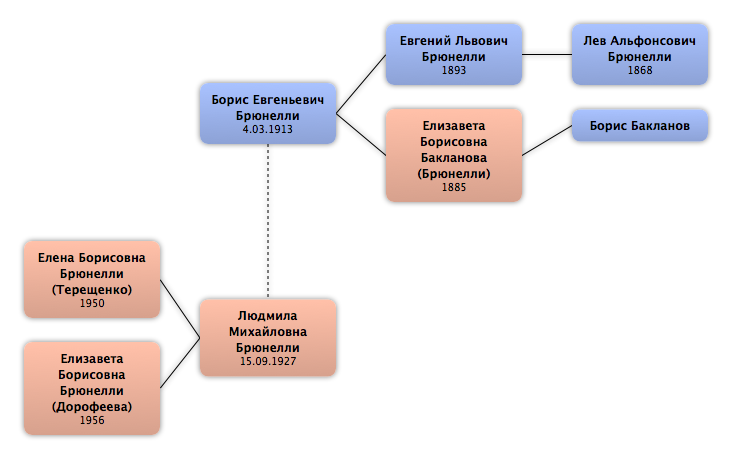

Домой
Домой
 Люди
Люди
 Семьи
Семьи
 Источники
Источники
 Диаграммы
Диаграммы
 Статистика
Статистика
Борис Евгеньевич Брюнелли

Контекст

Родители
| Отец | Дата рождения | Мать | Дата рождения |
|---|---|---|---|
|
Евгений Львович Брюнелли
|
1893 |
 Елизавета Борисовна Бакланова Елизавета Борисовна Бакланова
|
1885 |
Родители и дети
| Партнёры | Дата рождения | Дети |
|---|---|---|
|
Людмила Михайловна Брюнелли
|
15.09.1927 |
Елена Борисовна Брюнелли
Елизавета Борисовна Брюнелли
|
События
Факты
Медиа
Примечание
http://ru.wikipedia.org/wiki/Брюнелли,_Борис_Евгеньевич
Брюне́лли Бори́с Евге́ньевич (4 марта 1913 — август 1999) — доктор физико-математических наук (1966), профессор (1967), специалист в области геофизики высоких широт и изучения магнитосферы.
Биография
Научную деятельность начал в Ленинградском государственном университете, где работал более 30 лет. В Полярном геофизическом институте КФАН СССР работал с 1967 по 1985 гг. — заместителем директора по научной работе. Принимал активное участие в разработке комплексной программы фундаментальных исследований полярной ионосферы.
Ветеран Великой Отечественной войны, которую прошёл в качестве командира противотанковой батареи.
Научная деятельность
Автор 113 публикаций, в том числе монографии «Метод некогерентного рассеяния радиоволн» (в соавторстве) и 12 изобретений. Под его руководством защищены 12 кандидатских и две докторские диссертации.
Основные публикации
Ионосферные возмущения в низких широтах. (1971)
Исследования по геомагнетизму и аэрономии авроральной зоны. (1973)
Метод некогерентного рассеяния радиоволн. (1979)
Модель ионной химии Д-области ионосферы. (1990) Соавт. Г. А. Петрова
Физика ионосферы. (1988) Соавт.: А. А. Намгаладзе
Награды
За участие в работах по освоению Арктики и Антарктики и за плодотворную научную деятельность награждён орденами «Знак Почёта» и Трудового Красного Знамени.
Брюне́лли Бори́с Евге́ньевич (4 марта 1913 — август 1999) — доктор физико-математических наук (1966), профессор (1967), специалист в области геофизики высоких широт и изучения магнитосферы.
Биография
Научную деятельность начал в Ленинградском государственном университете, где работал более 30 лет. В Полярном геофизическом институте КФАН СССР работал с 1967 по 1985 гг. — заместителем директора по научной работе. Принимал активное участие в разработке комплексной программы фундаментальных исследований полярной ионосферы.
Ветеран Великой Отечественной войны, которую прошёл в качестве командира противотанковой батареи.
Научная деятельность
Автор 113 публикаций, в том числе монографии «Метод некогерентного рассеяния радиоволн» (в соавторстве) и 12 изобретений. Под его руководством защищены 12 кандидатских и две докторские диссертации.
Основные публикации
Ионосферные возмущения в низких широтах. (1971)
Исследования по геомагнетизму и аэрономии авроральной зоны. (1973)
Метод некогерентного рассеяния радиоволн. (1979)
Модель ионной химии Д-области ионосферы. (1990) Соавт. Г. А. Петрова
Физика ионосферы. (1988) Соавт.: А. А. Намгаладзе
Награды
За участие в работах по освоению Арктики и Антарктики и за плодотворную научную деятельность награждён орденами «Знак Почёта» и Трудового Красного Знамени.
http://istina.imec.msu.ru/workers/2438805/
Книги:
1962 Использование естественных электромагнитных вариаций для исследования верхних слоев Земли
Бердичевский М.Н., Брюнелли Б.Е., Ланцов А.Е., Распопов О.М.
в журнале Вопросы геофизики (издание ЛГУ), № 13
1961 Разработка упрощенных методов магнитотеллурической разведки
Бердичевский М.Н., Ланцов А.Е., Брюнелли Б.Е., Распопов О.М.
в сборнике Состояние и перспективы развития разведочной геофизики, место издания Гостоптехиздат Москва
1959 Наблюдения короткопериодических вариаций электромагнитного поля Земли
Брюнелли Б.Е., Бердичевский М.Н., Алексеев А.М., Бурдо О.А.
в журнале Известия АН СССР, сер. геофиз, № 8, с. 1206-1213
1959 Теоретические предпосылки магнитотеллурического профилирования
Бердичевский М.Н., Брюнелли Б.Е.
в журнале Известия АН СССР, сер. геофиз, № 7
Книги:
1962 Использование естественных электромагнитных вариаций для исследования верхних слоев Земли
Бердичевский М.Н., Брюнелли Б.Е., Ланцов А.Е., Распопов О.М.
в журнале Вопросы геофизики (издание ЛГУ), № 13
1961 Разработка упрощенных методов магнитотеллурической разведки
Бердичевский М.Н., Ланцов А.Е., Брюнелли Б.Е., Распопов О.М.
в сборнике Состояние и перспективы развития разведочной геофизики, место издания Гостоптехиздат Москва
1959 Наблюдения короткопериодических вариаций электромагнитного поля Земли
Брюнелли Б.Е., Бердичевский М.Н., Алексеев А.М., Бурдо О.А.
в журнале Известия АН СССР, сер. геофиз, № 8, с. 1206-1213
1959 Теоретические предпосылки магнитотеллурического профилирования
Бердичевский М.Н., Брюнелли Б.Е.
в журнале Известия АН СССР, сер. геофиз, № 7
http://www.kosmofizika.ru/history/pgi/pgi_1.htm
Б.Е. Брюнелли
БРЮНЕЛЛИ Борис Евгеньевич (04.03.1913-08.1999). Окончил Ленинградский Государственный Университет, геофизик-магнитолог (1935). Д.ф-м.н. (1966). Доцент (1946), профессор (1967). Научную деятельность начал в Ленинградском государственном университете, которому отдал более 30 лет.
В Полярном геофизическом институте (ПГИ) Кольского научного центра работал с 1967 по 1985 гг., являлся зам. директора по научной работе. Известный ученый, работавший в области геофизики высоких широт и изучения магнитосферы. Основным направлением его научной деятельности было исследование геомагнитных возмущений, комплексное изучение физики полярной ионосферы и совершенствование техники геомагнитных измерений. Создал серию магнитометрических приборов, позволивших существенно расширить область геофизических исследований и решить ряд фундаментальных проблем. Созданный в предвоенные годы магнитный градиентомер позволил впервые в мировой практике определять место- положение затонувшего корабля по магнитному полю, а также проводить поиск магнитных аномалий с движущихся объектов. Разработанная Б.Е. Брюнелли портативная магнитовариационная станция позволила перенести измерения переменного геомагнитного поля в Арктику и Антарктику и в течение многих лет являлась в нашей стране основным прибором, используемым при экспедиционных геомагнитных исследованиях. Созданный Б.Е. Брюнелли высокочувствительный магнитометр позволил впервые в мировой практике реализовать магнитотеллурические методы геофизической разведки, дающие важную информацию о внутреннем строении земной коры. Участвовал в первых работах по испытаниям этих методов, а также в создании полевой магнитотеллурической лаборатории (МТЛ), которая пущена в серийное производство и в настоящее время широко используется в практике геофизической разведки. Работы Б.Е. Брюнелли в области физики полярной ионосферы и магнитосферы способствовали формированию представлений о высокоширотном геофизическом возмущении как едином физическом процессе. Принимал активное участие в разработке комплексной программы фундаментальных иссле- дований полярной ионосферы. Под его руководством защищены 12 кандидатских и две докторские диссертации. Результаты его научной деятельности получили международное признание. Являлся членом нескольких международных научных организаций и ряда научных советов.Ветеран Великой Отечественной войны, которую прошел в качестве командира противотанковой батареи. За участие в работах по освоению Арктики и Антарктики и за плодотворную научную деятельность награжден орденами «Знак Почета» и Трудового Красного Знамени.
Автор 113 публикаций, в том числе монографии «Метод некогерентного рассеяния радиоволн» (в соавторстве) и 12 изобретений. Основные публикации: Исследования по геомагнетизму и аэрономии авроральной зоны, 1973; Метод некогерентного рассеяния радиоволн, 1979; Ионосферные возмущения в низких широтах, 1971.
Борис Евгеньевич Брюнелли был в институте вторым по времени заместителем директора института по научной работе. Его влияние во многом определило развитие науки в институте. Б.Е. пришел в ПГИ из ЛГУ, где его профессорская должность перешла по наследству к М.И. Пудовкину, который к нашему всеобщему сожалению оставил Лопарскую и ПГИ.
Борис Евгеньевич был из той еще довоенной когорты ученых, которая начинала магнитную съемку и магнитные исследования в нашей стране. Он создал свой вариант прибора, который так и назывался "магнитометр Брюнелли". Во время войны Б.Е. пошел добровольцем в ополчение, но воевал недолго, был ранен в ногу довольно тяжело, последствия сказывались всю жизнь.
Приход Б.Е. в институт оживил научную работу, наладились регулярные семинары, появился авторитетный строгий критик наших часто незрелых работ и затей. За Б.Е. Брюнелли потянулись в ПГИ его ученики по университету - В.Б. Ляцкий, Ю. П. Мальцев, В.Д. и Е.Д. Терещенко.
Я познакомился с Борисом Евгеньевичем еще до его прихода в институт, во время поездки на конференцию в Лондон в 1967 году. Ходить по городу нам разрешалось не меньше чем втроем, и несколько раз мы выходили вместе - я, Б.Е. и Александр Иванович Оль, прекрасный человек и талантливый ученый, рано и несправедливо уволенный на пенсию и рано ушедший из жизни.. Мне было интересно в компании этих двух настоящих питерских интеллигентов, знавших Англию и Лондон гораздо лучше меня и ненавязчиво эти знания раскрывавших.
В Апатитах с Б.Е. у нас установились хорошие отношения, мы дружили семьями, хотя по работе и возникали иногда шероховатости - он болел за ионосферное направление и опасался, что мой напор может вызвать перекос в магнитосферную сторону Вообще также как и С.И. Исаев, Борис Евгеньевич был глубоко неравнодушен, принимал близко к сердцу все дела в институте и, как говорится, не тянул одеяло на себя. Хотя он и публиковал статьи и книги в соавторстве с учениками, никакого выпячивания профессора Брюнелли как научного лидера не происходило.
Последние годы его работы в ПГИ были для него, как мне кажется, трудными, и он ушел без шума, уехал в Ленинград.
В моей памяти они стоят рядом, С.И. Исаев и Б.Е. Брюнелли, два очень разных человека, объединенных общей заботой о своем детище, институте, из которого оба вынуждены были уйти раньше времени, не в расцвете, но и не в закате сил..
Б.Е. Брюнелли
БРЮНЕЛЛИ Борис Евгеньевич (04.03.1913-08.1999). Окончил Ленинградский Государственный Университет, геофизик-магнитолог (1935). Д.ф-м.н. (1966). Доцент (1946), профессор (1967). Научную деятельность начал в Ленинградском государственном университете, которому отдал более 30 лет.
В Полярном геофизическом институте (ПГИ) Кольского научного центра работал с 1967 по 1985 гг., являлся зам. директора по научной работе. Известный ученый, работавший в области геофизики высоких широт и изучения магнитосферы. Основным направлением его научной деятельности было исследование геомагнитных возмущений, комплексное изучение физики полярной ионосферы и совершенствование техники геомагнитных измерений. Создал серию магнитометрических приборов, позволивших существенно расширить область геофизических исследований и решить ряд фундаментальных проблем. Созданный в предвоенные годы магнитный градиентомер позволил впервые в мировой практике определять место- положение затонувшего корабля по магнитному полю, а также проводить поиск магнитных аномалий с движущихся объектов. Разработанная Б.Е. Брюнелли портативная магнитовариационная станция позволила перенести измерения переменного геомагнитного поля в Арктику и Антарктику и в течение многих лет являлась в нашей стране основным прибором, используемым при экспедиционных геомагнитных исследованиях. Созданный Б.Е. Брюнелли высокочувствительный магнитометр позволил впервые в мировой практике реализовать магнитотеллурические методы геофизической разведки, дающие важную информацию о внутреннем строении земной коры. Участвовал в первых работах по испытаниям этих методов, а также в создании полевой магнитотеллурической лаборатории (МТЛ), которая пущена в серийное производство и в настоящее время широко используется в практике геофизической разведки. Работы Б.Е. Брюнелли в области физики полярной ионосферы и магнитосферы способствовали формированию представлений о высокоширотном геофизическом возмущении как едином физическом процессе. Принимал активное участие в разработке комплексной программы фундаментальных иссле- дований полярной ионосферы. Под его руководством защищены 12 кандидатских и две докторские диссертации. Результаты его научной деятельности получили международное признание. Являлся членом нескольких международных научных организаций и ряда научных советов.Ветеран Великой Отечественной войны, которую прошел в качестве командира противотанковой батареи. За участие в работах по освоению Арктики и Антарктики и за плодотворную научную деятельность награжден орденами «Знак Почета» и Трудового Красного Знамени.
Автор 113 публикаций, в том числе монографии «Метод некогерентного рассеяния радиоволн» (в соавторстве) и 12 изобретений. Основные публикации: Исследования по геомагнетизму и аэрономии авроральной зоны, 1973; Метод некогерентного рассеяния радиоволн, 1979; Ионосферные возмущения в низких широтах, 1971.
Борис Евгеньевич Брюнелли был в институте вторым по времени заместителем директора института по научной работе. Его влияние во многом определило развитие науки в институте. Б.Е. пришел в ПГИ из ЛГУ, где его профессорская должность перешла по наследству к М.И. Пудовкину, который к нашему всеобщему сожалению оставил Лопарскую и ПГИ.
Борис Евгеньевич был из той еще довоенной когорты ученых, которая начинала магнитную съемку и магнитные исследования в нашей стране. Он создал свой вариант прибора, который так и назывался "магнитометр Брюнелли". Во время войны Б.Е. пошел добровольцем в ополчение, но воевал недолго, был ранен в ногу довольно тяжело, последствия сказывались всю жизнь.
Приход Б.Е. в институт оживил научную работу, наладились регулярные семинары, появился авторитетный строгий критик наших часто незрелых работ и затей. За Б.Е. Брюнелли потянулись в ПГИ его ученики по университету - В.Б. Ляцкий, Ю. П. Мальцев, В.Д. и Е.Д. Терещенко.
Я познакомился с Борисом Евгеньевичем еще до его прихода в институт, во время поездки на конференцию в Лондон в 1967 году. Ходить по городу нам разрешалось не меньше чем втроем, и несколько раз мы выходили вместе - я, Б.Е. и Александр Иванович Оль, прекрасный человек и талантливый ученый, рано и несправедливо уволенный на пенсию и рано ушедший из жизни.. Мне было интересно в компании этих двух настоящих питерских интеллигентов, знавших Англию и Лондон гораздо лучше меня и ненавязчиво эти знания раскрывавших.
В Апатитах с Б.Е. у нас установились хорошие отношения, мы дружили семьями, хотя по работе и возникали иногда шероховатости - он болел за ионосферное направление и опасался, что мой напор может вызвать перекос в магнитосферную сторону Вообще также как и С.И. Исаев, Борис Евгеньевич был глубоко неравнодушен, принимал близко к сердцу все дела в институте и, как говорится, не тянул одеяло на себя. Хотя он и публиковал статьи и книги в соавторстве с учениками, никакого выпячивания профессора Брюнелли как научного лидера не происходило.
Последние годы его работы в ПГИ были для него, как мне кажется, трудными, и он ушел без шума, уехал в Ленинград.
В моей памяти они стоят рядом, С.И. Исаев и Б.Е. Брюнелли, два очень разных человека, объединенных общей заботой о своем детище, институте, из которого оба вынуждены были уйти раньше времени, не в расцвете, но и не в закате сил..
Источники
Родство
| Имя | Степень родства | Дата рождения | Место рождения | Дата смерти | Место смерти |
|---|---|---|---|---|---|
| Партнёров | |||||
| Партнёр или жена | 15.09.1927 | ||||
| Братья и сёстры | |||||
| Сестра | 1910 | ||||
| Сестра | 1914 | ||||
| Сестра | 1918 | 2000 | |||
| Cестра по одному из родителей | 01.02.1926 | Ленинград, СССР | 06.10.1997 | Санкт-Петербург, Россия | |
| Дети | |||||
| Дочь | 1950 | ||||
| Дочь | 1956 | ||||
| Родителей | |||||
| Мать | 1885 | 1948 | |||
| Отец | 1893 | 10.06.1938 | Ростовская область, СССР | ||
| Внуки | |||||
| Внук | 1974 | ||||
| Внук | 1980 | ||||
| Дедушки и бабушки | |||||
| Дедушка | |||||
| Дедушка | 1868 | ||||
| Прадедушка и прабабушка | |||||
| Прабабушка | |||||
| Прадедушка | 1843 | ||||
| Шурины и невестки | |||||
| Шурин | 22.08.1926 | Хабаровск, СССР | 08.05.2006 | Санкт-Петербург, Россия | |
| Племянники и племянницы | |||||
| Племянник | |||||
| Племянник | 1937 | ||||
| Племянница | 1939 | ||||
| Племянница | 19.03.1963 | Ленинград, СССР | |||
| Племянник | 22.02.1965 | Ленинград, СССР | |||
| Внучатые племянники и внучатые племянницы | |||||
| Внучатый племянник | |||||
| Внучатая племянница | |||||
| Внучатый племянник | 01.09.1988 | Ленинград, СССР | |||
| Внучатый племянник | 19.11.1991 | Санкт-Петербург, Россия | |||
| Внучатый племянник | 15.07.1995 | Санкт-Петербург, Россия | |||
| Тёти и дяди | |||||
| Дядя | |||||
| Двоюродные дедушки и двоюродные бабушки | |||||
| Двоюродный дедушка | 23.06.1873 | Манглиси, Грузия | 7.10.1949 | Париж, Франция | |
| Двоюродная бабушка | 17.04.1879 | Новороссийск, Россия | 20.09.1962 | Париж, Франция | |
| Двоюродная бабушка | 1887 | 22.02.1927 | Париж, Франция | ||
| Двоюродные братья и сёстры | |||||
| Двоюродная сестра | |||||
| Двоюродная сестра | |||||
| Другие родственники | |||||
| Двоюродная тётя | 9.08.1902 | Санкт-Петербург, Россия | 17.09.1923 | Ницца, Франция | |
| Двоюродные племянники (племянницы) | |||||
| Двоюродная племянница | |||||
| Двоюродный племянник | |||||